Leixões and Benjamin Kanuric Agree to Contract Termination
The Austrian midfielder leaves Estádio do Mar by mutual agreement after 16 appearances, three goals and two assists.
Read more →
Slough Town Build Momentum Ahead Of National League South Opener
A pre-season win over Oxford City, nine summer signings and Alan Julian's first campaign in charge set the tone before the Rebels host Ebbsfleet United.
Read more →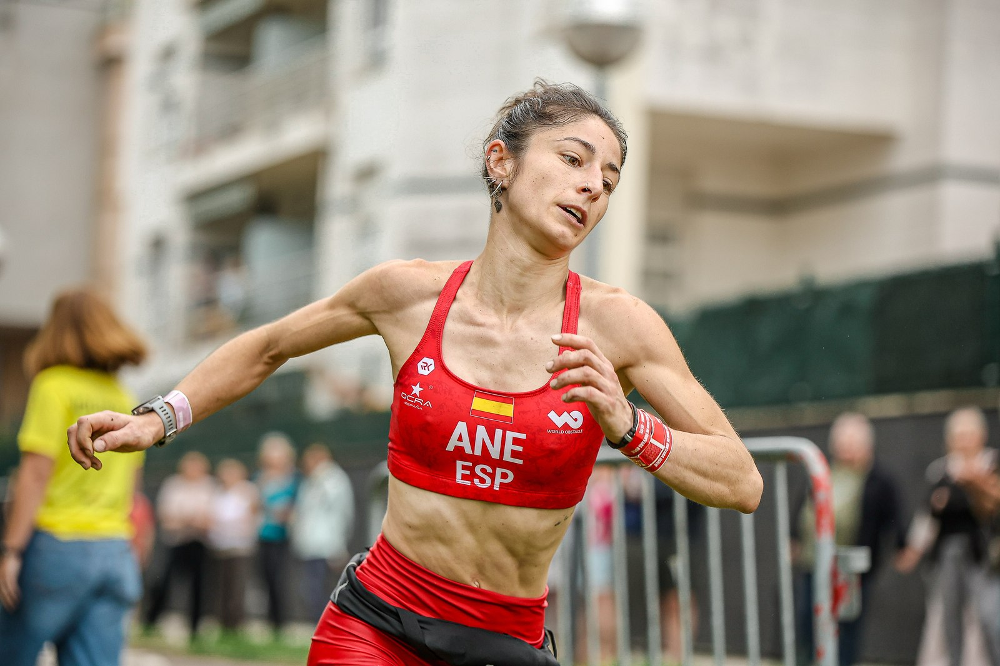
OCR European Championships Bring 2,573 Athletes From 28 Countries To Irun For Spain's First Hosting
The ninth OCR European Championships ran from 28 to 31 May in Irun, Gipuzkoa — the first time Spain has hosted Europe's obstacle course racing championship — with Spain fielding the largest national delegation.
Read more →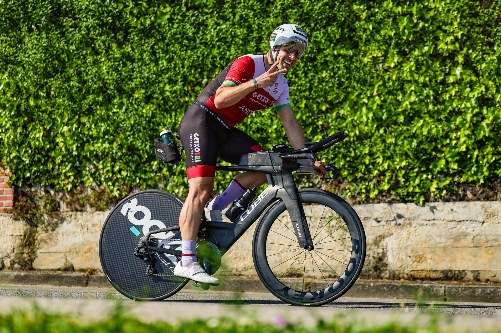
Tri100Llanes Debuts As Asturias Championship With 100km Coastal Triathlon Through Llanes
The inaugural Tri100Llanes combined a Cantabrian Sea swim, an 80km bike leg and an 18km four-lap run through Llanes on 24 May, doubling as the 2026 Campeonato de Asturias de Triatlón in the Media Distancia category.
Read more →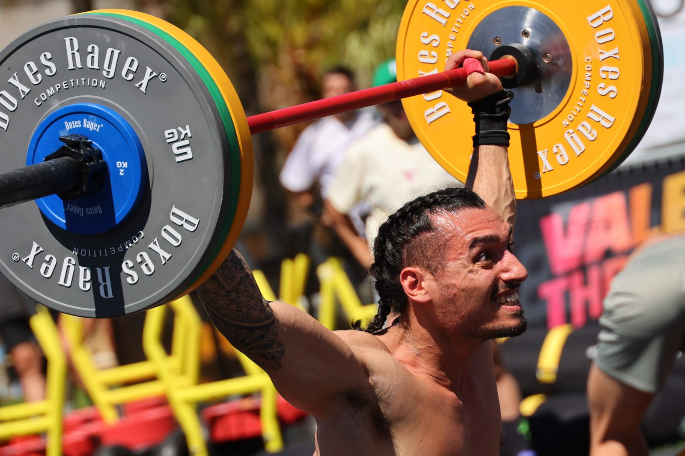
Valencia Throwdown Returns For Three Days Of CrossFit Competition Across Individual, Pairs And Trios
BOX 980 staged the 2026 edition of Valencia Throwdown from 22 to 24 May, bringing individual, pairs and trios divisions across Élite, RX, Intermediate and Scaled categories to Valencia.
Read more →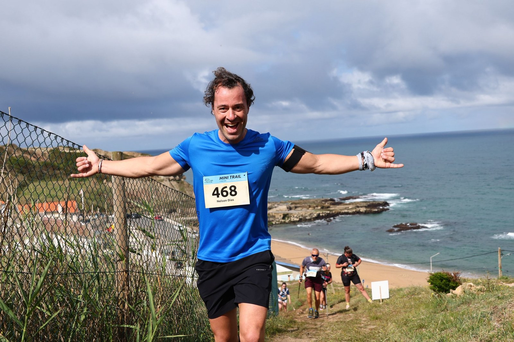
Trail Rota Dos Piratas Brings Four Distances To Ribamar's Coastal Trails For Ambulance Fundraiser
Ribamar hosted the Trail Rota dos Piratas on 17 May 2026, with a 30km, 17km, 13km and non-competitive 10km walk raising funds for a local ambulance.
Read more →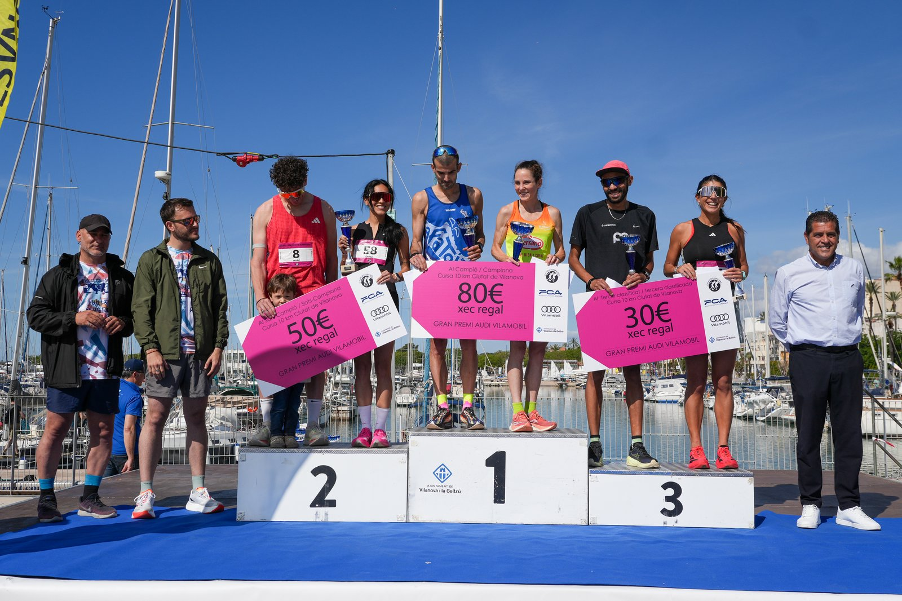
Cursa Ciutat De Vilanova Adds A Mile Race For 13th Edition Of Its Flat Seafront 10K And 5K
Vilanova i la Geltrú hosted its 10km, 5km and a newly added Mile Obert along the Passeig Marítim on 17 May 2026, with prizes from the Audi Vilamobil grand prize.
Read more →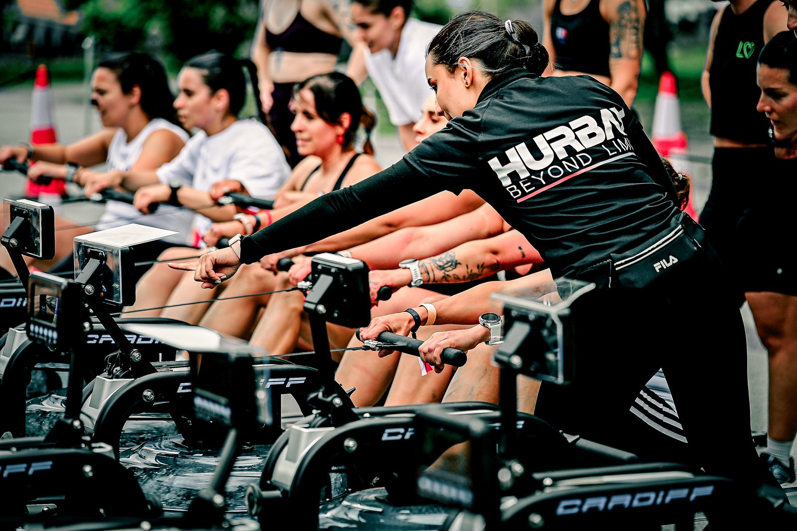
Hurbax Brings Its Hybrid Circuit To Galicia For The First Time, Drawing Over 500 Athletes In Pontevedra
Hurbax staged its running-and-functional-fitness race at Montero Ríos on 16 May 2026, with more than 500 athletes registered in the series' first stop in Galicia.
Read more →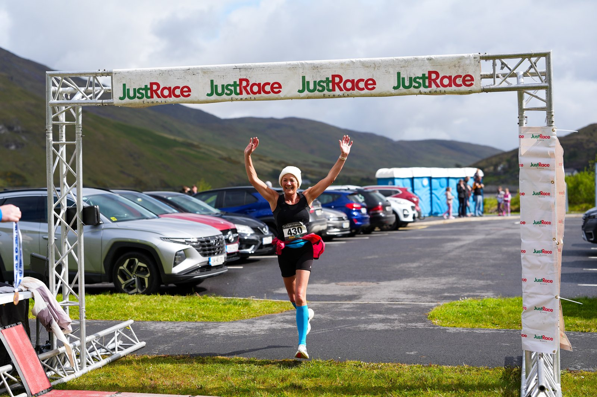
Delphi Half Marathon & 10K Sells Out Point-To-Point Course Past Killary Fjord
Runners took on the half marathon and 10K from Glenkeen Farm to Leenane on 16 May 2026, with registration selling out ahead of race day.
Read more →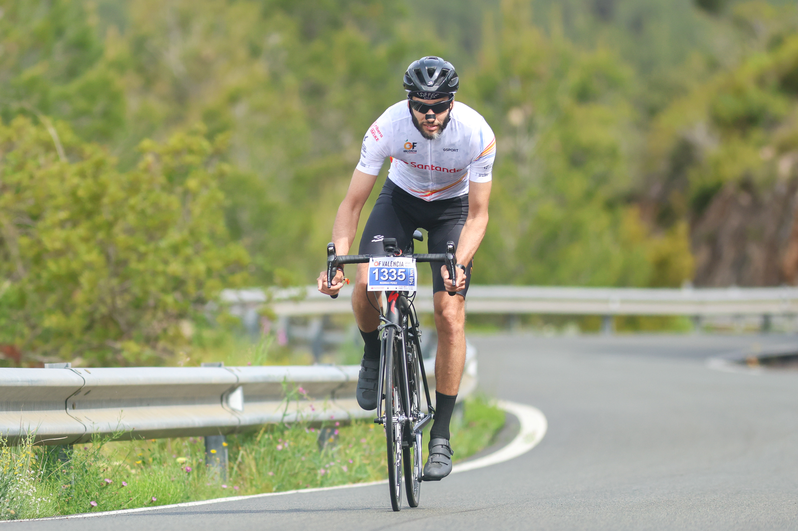
Gran Fondo València Returns For XXI Edition With Over 2,600 Cyclists From 24 Countries
The Santander-backed cyclosportive offered 177km and 148km routes through 28 municipalities of the Comunitat Valenciana on 2 May 2026.
Read more →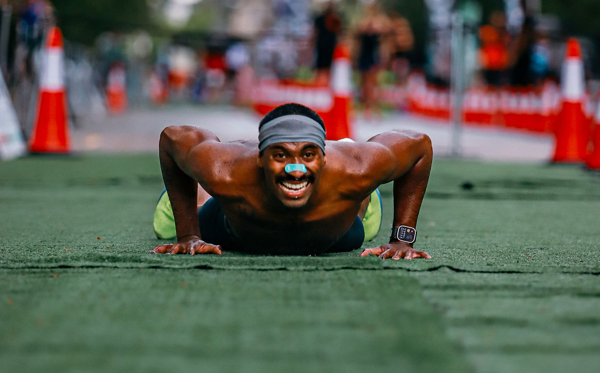
Hurbax Valladolid Draws Over 600 Athletes In Race Marking 475th Anniversary Of The Valladolid Controversy
More than 600 athletes registered for Hurbax's 2026 stop in Valladolid, a hybrid running-and-functional-fitness race held 25 April 2026 to mark the 475th anniversary of the Valladolid Controversy.
Read more →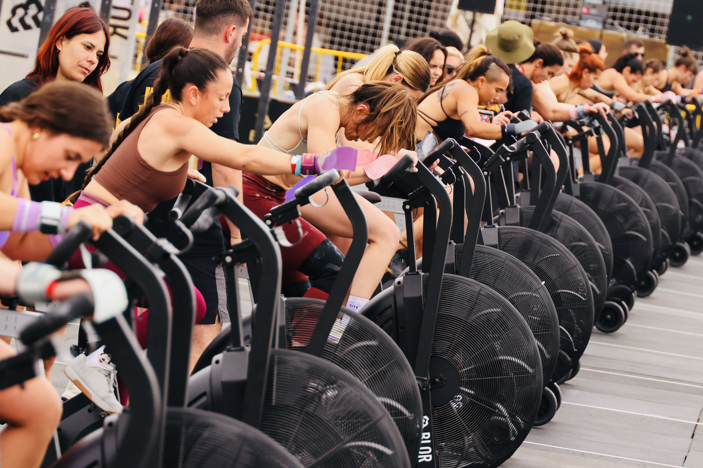
The Battle Games Marks Tenth Edition With Over 800 Athletes In Castellón
Arnau Sabaté Batalla topped the RX Individual Masculino division as three days of national crosstraining competition brought athletes from across Spain to the Perpetuo Socorro football fields on 24–26 April 2026.
Read more →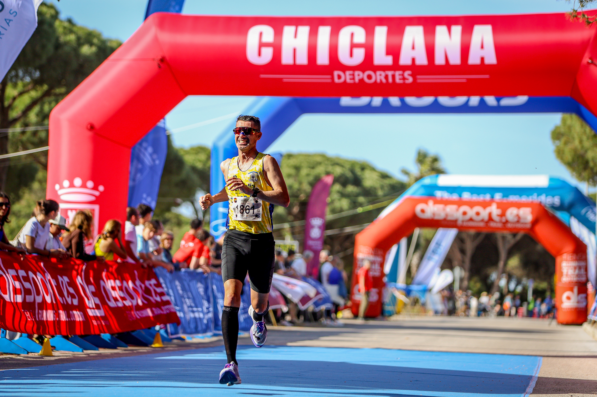
González Rivera And Tisalema Win III Viamed Media Maratón Ciudad De Chiclana
Jorge González Rivera set a new course record as a record 2,800 runners from 33 countries took part in Chiclana's first officially homologated half marathon on 19 April 2026.
Read more →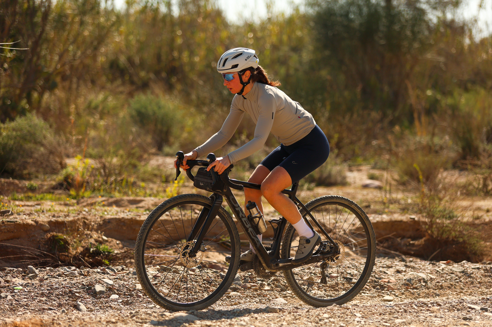
Cingles Gravel Alcover Combines Cycling, Community And Solidarity
The non-competitive ride offered 53-kilometre and 90-kilometre routes through Alcover on 12 April 2026.
Read more →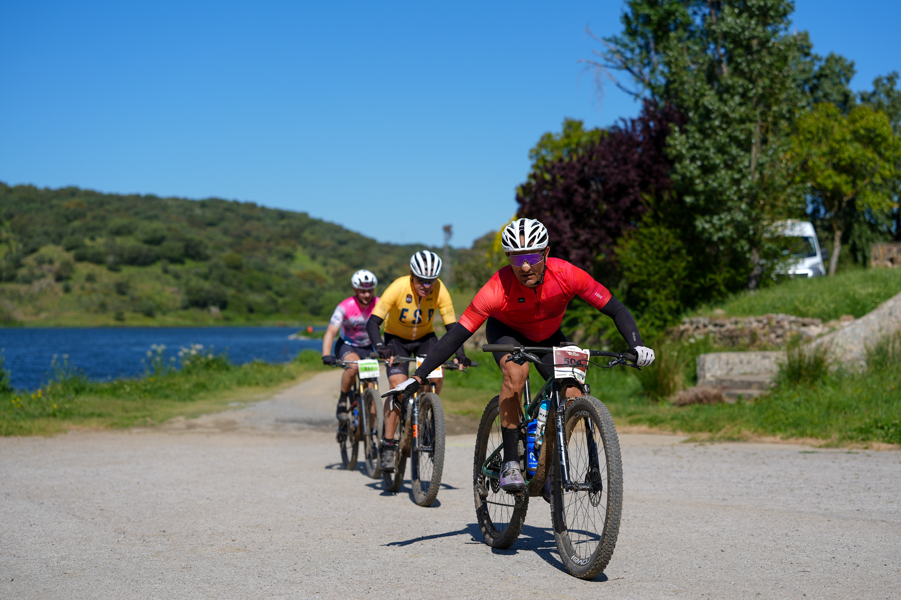
Fischer And Benedito Win Preeuropeo Templarios MTB Race In Jerez De Los Caballeros
The UCI-sanctioned marathon on 12 April 2026 served as an official test event for the 2027 European MTB Marathon Championship.
Read more →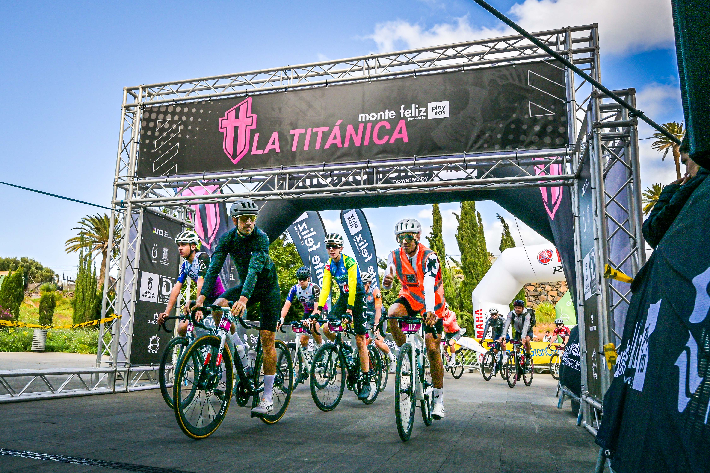
Blas Rivero And Michela Santini Win Two-Day Desafío La Titánica
The 21st edition crossed Gran Canaria on 11–12 April, with wind and rain reshaping the decisive stage.
Read more →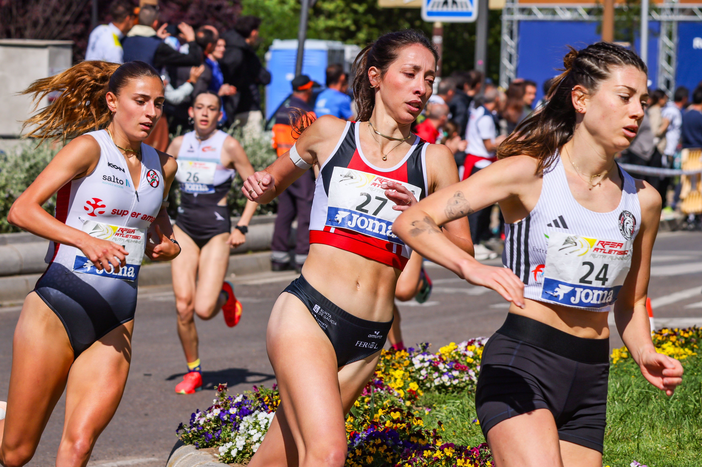
Aferdi And Ouhaddou Crowned Spanish Half Marathon Champions At XX Media Maratón De Mérida
Around 2,500 runners took the start on Mérida's Roman monuments circuit on 11 April 2026, as the race doubled as the Spanish Half Marathon Championship for the first time in Extremadura.
Read more →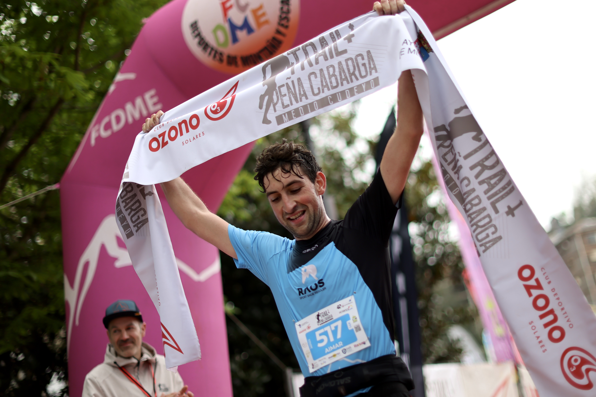
Ángel Mier And María Alles Win Fourth Trail Peña Cabarga In Solares
More than 750 athletes took part across three mountain-running formats on 5 April 2026.
Read more →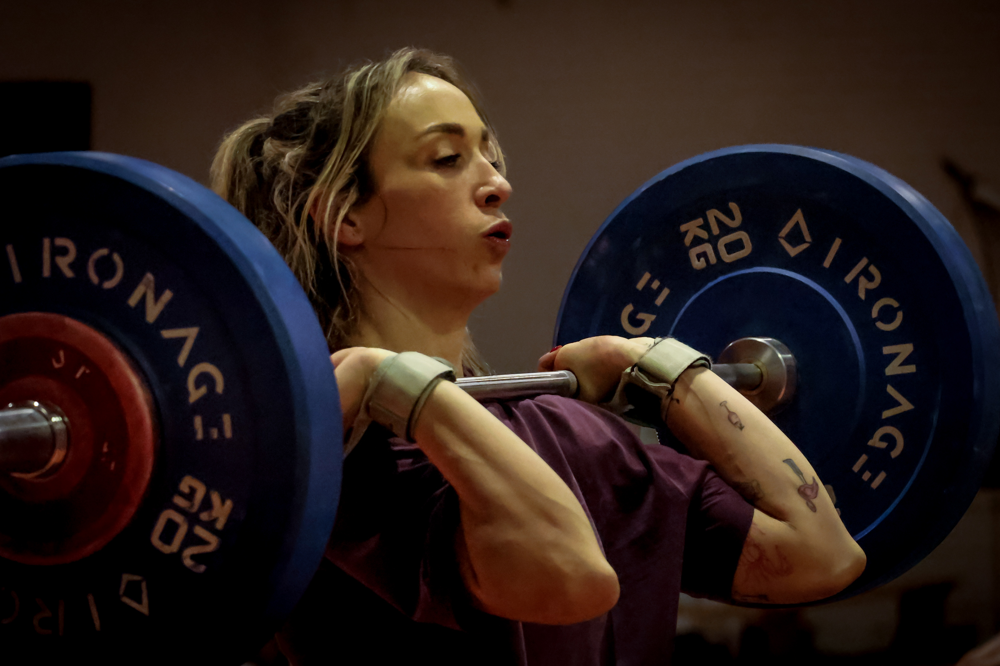
Matosinhos Throwdown Brings 400 Athletes Together For Trio Competition
HHM trios competed across RX, Intermediate and Scaled divisions in Matosinhos on 28 March 2026.
Read more →Army Performance HYROX Training Camp Brings Athletes Together In Vila Nova De Gaia
The event took place in Vila Nova de Gaia on 27 March 2026, with coverage by the Image Media team.
Read more →
Diego Menéndez and María Martínez Crowned Spanish Trail Champions in Caldas de Reis
A late attack on the final climb rewrites the general classification with two stages left.
Read more →
Trilhos Dos Calceteiros Returns To Fanhões For Sixth Edition
Faz-te aos Trilhos! trail race doubles as Lisbon's regional trail championship.
Read more →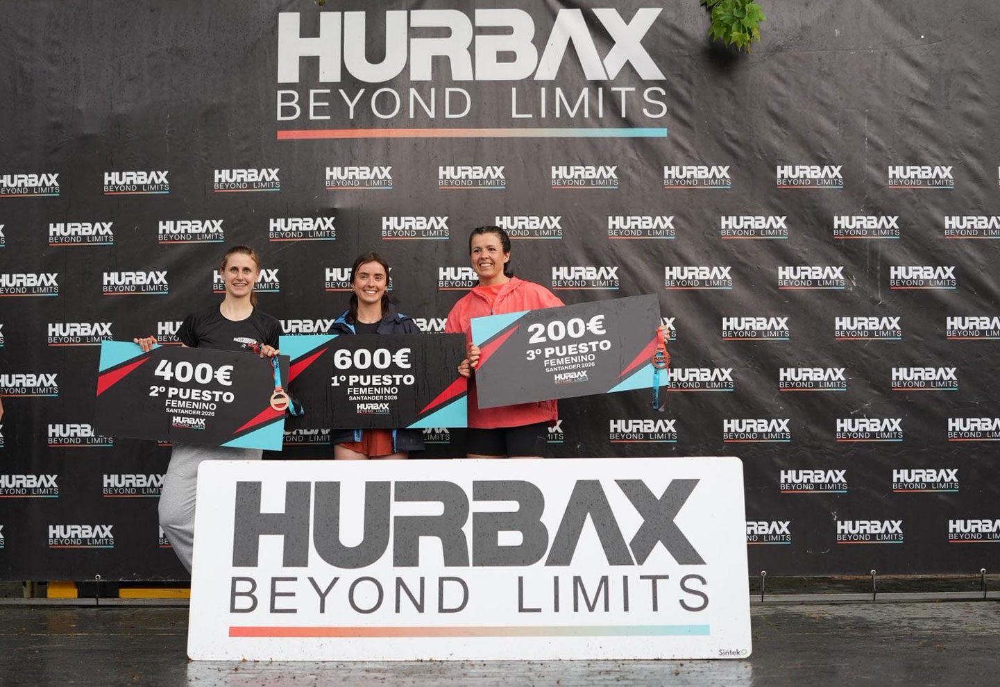
Hurbax Brings Its Run-and-Workout Circuit to Santander's Plaza Alfonso XIII
A 19-year-old stuns the field and enters the conversation for the summer championships.
Read more →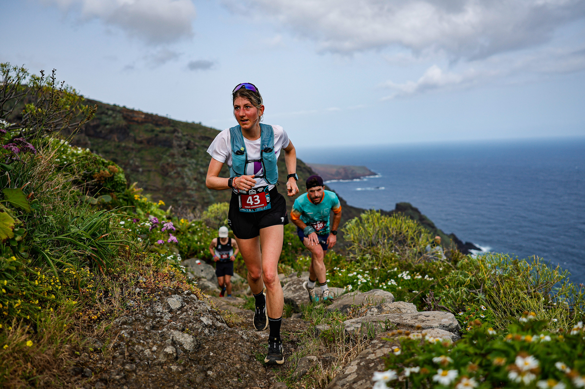
Manuel Merillas and Sara Alonso Win Acantilados del Norte Skyrace in La Palma
Manuel Merillas and Sara Alonso win the Acantilados del Norte Skyrace on a 29km coastal route above the Atlantic.
Read more →
Carrera De La Primavera Turns Madrid Red For Europe’s First Chinese New Year Running Race
More than 6,000 runners took new routes linking Madrid Río with the Casa de Campo as the Carrera de la Primavera closed the Año del Caballo weekend.
Read more →
XXXIII Media Maratón Ciudad de Cartagena Sets Participation Record With Nearly 3,000 Runners
The Memorial Gregorio Lorente Rosas half marathon and 10K drew record entries through the streets of historic Cartagena.
Read more →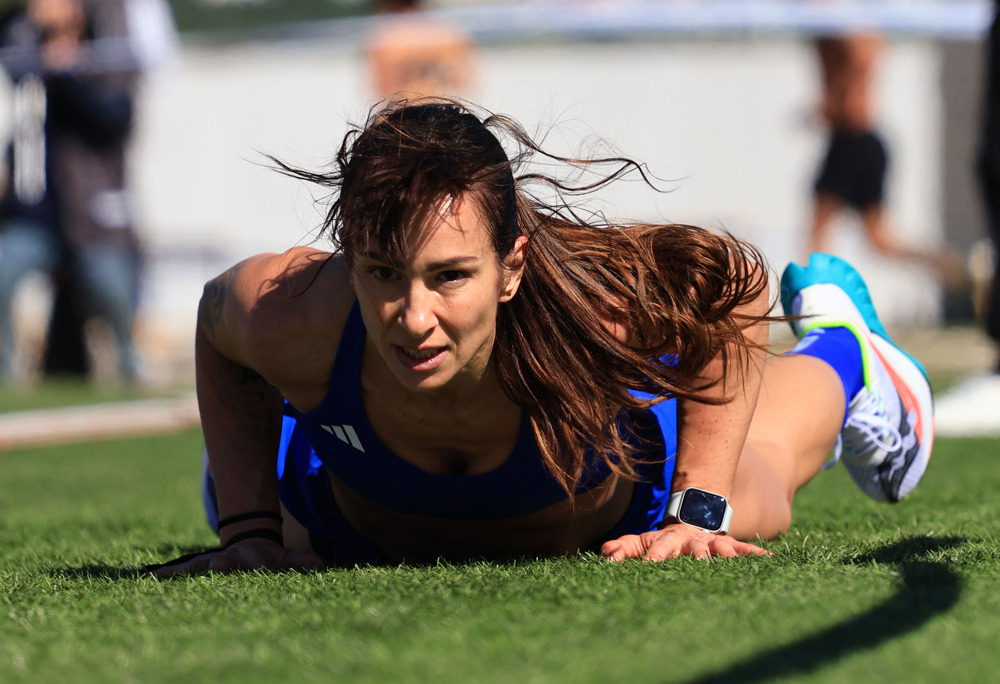
VORTEX Hybrid Games Makes Algarve Debut At Lagos Municipal Stadium
Eight rounds of 800m runs and functional stations brought Hyrox-style racing to the Estádio Municipal de Lagos for the format’s first Portuguese edition.
Read more →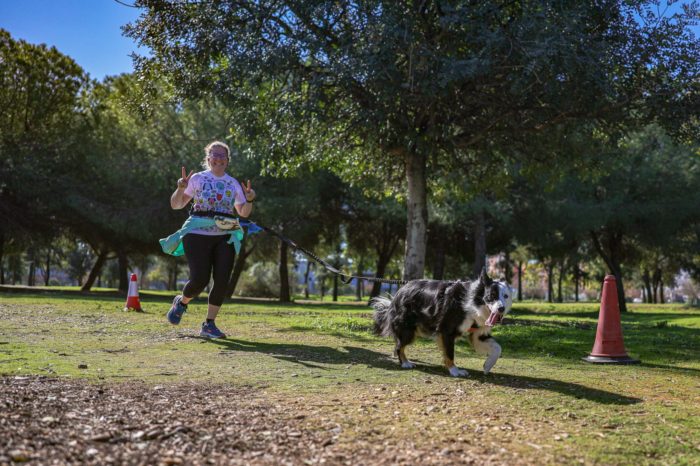
XIV Carrera Popular Parque Tamarguillo Brings Andalucía Day Crowds To Seville’s Valdezorras
More than 1,000 runners tackled the 13km and 6km courses inside Tamarguillo Park on Andalucía Day.
Read more →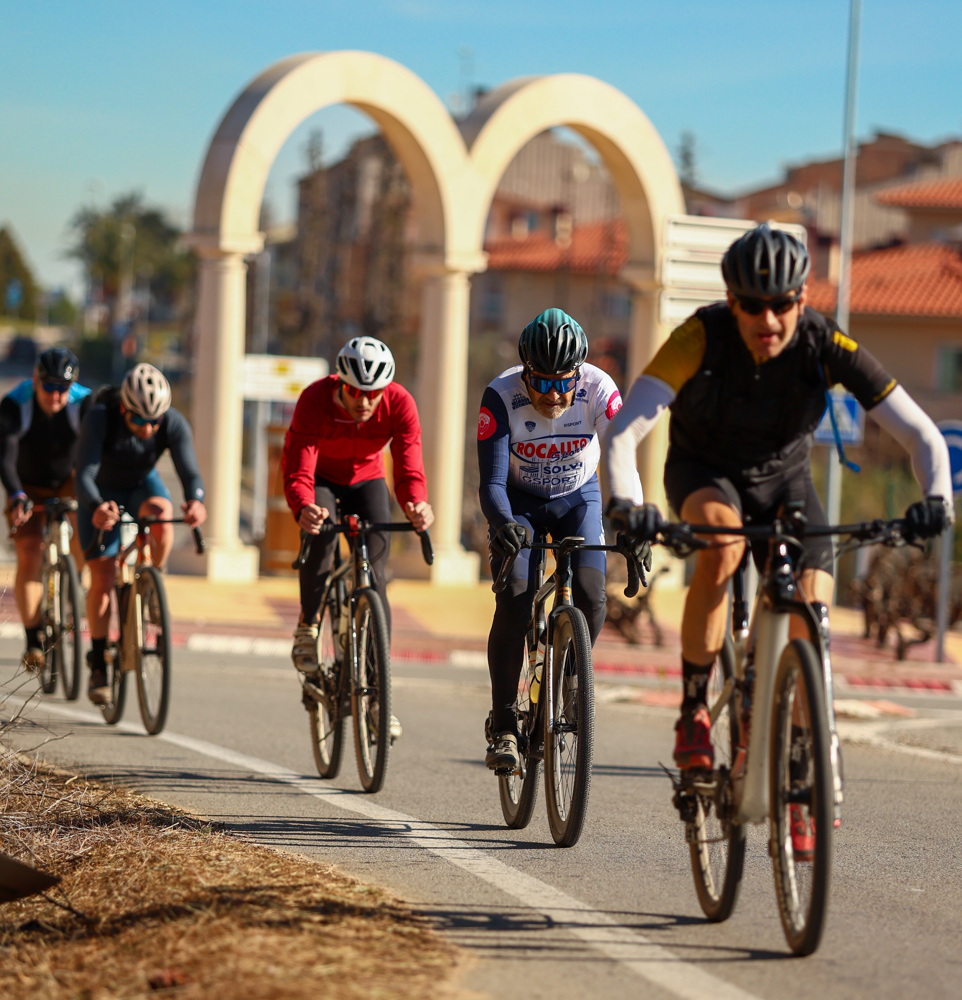
Massos Gravel Rolls Through Maspujols in Sold-Out Charity Ride
Riders of every level tackle 60km and 700m of climbing in the Sport1ion Gravel Circuit's second stage, raising support for ACCU Catalunya.
Read more →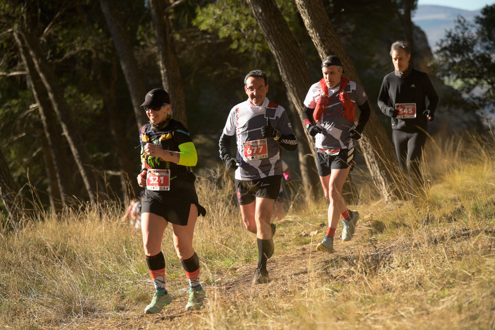
Daroca Trail Returns For A Fifth Edition Through The Aragón Mountains
Runners climbed out of the medieval city walls of Daroca for a redesigned course featuring new zones and a fresh 6K route for newcomers.
Read more →
AVYNT League Opens With Hyrox-Style Stage One in Vila Nova de Gaia
AVYNT Hybrid Arena launched its new league across ten divisions on February 21, with Timon e Pumba's Doubles Masculino Pro win the fastest time of the day.
Read more →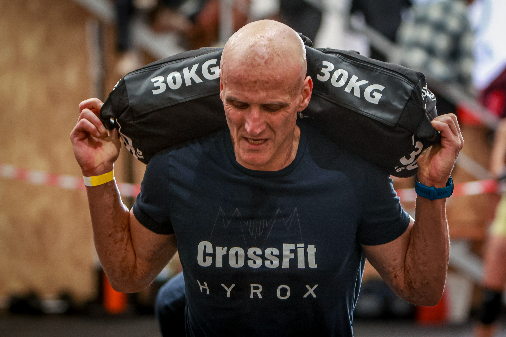
Turtle Games Debut Draws Over 100 Athletes to CrossFit Esmoriz
The inaugural doubles competition split more than 50 pairs across men's and women's divisions in a nine-station hybrid workout, with Somos Uma Vibe and Caracóis da Aldeia topping the leaderboards.
Read more →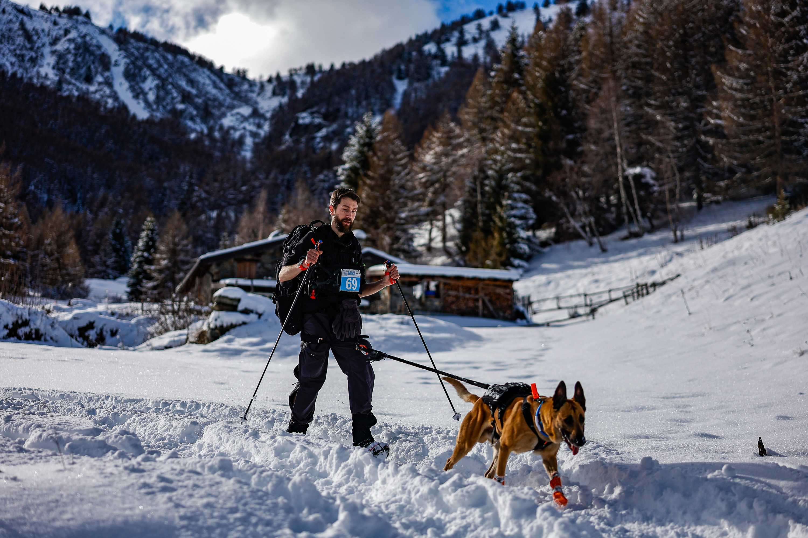
Andrea Sorteni and Kristina Kmetova Lead Record Field Through Fresh Snow at Italy's Grande Corsa Bianca
Both camps confirm terms after months of back-and-forth negotiation.
Read more →